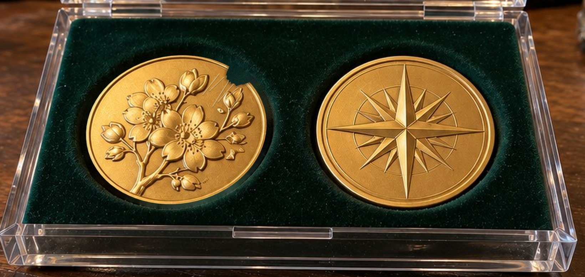
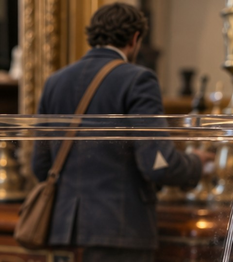

赤い糸の先 ／ 第一話
同じ傷
閉じた事件の箱には、封をする決まりがある。水城が最後の箱に封緘紙を貼ろうとしたとき、内線が鳴った。
「七十四の写真、まだそっちにある？」
鑑識の瀬尾だった。受話器の向こうで小さく金属が鳴り、瀬尾が「ごめん」と言った。机に何かを置きながら電話をするとき、彼は決まって受話器を肩に挟む。水城は封緘紙を裏返し、糊の面を上にした。
「原本ならある。紙焼きは明日、保管庫へ」
「じゃあ、明日まで待たないで。いま送った写真を見て」
件名には『八十二・別保管分』とあった。八十二は、押収した金貨を鑑定に回した事件だ。添付の写真はその鑑定のあと、同じ押収品のうち、金貨とは別に保管されていた品を撮り直したものだった。深緑の台紙に、掌に収まるほどの丸い記念メダルが二枚、並んでいる。二枚とも、枝先に咲いた花が浮き彫りになっていた。
「七十四の、足りなかった二枚だと思う？」と瀬尾が聞いた。
七十四の箱を開け、水城は預かり票を取り出した。骨董店『蔵の市』で助手の田中が買った記念メダルは四枚。収集家が受け取ったのは二枚。田中から先の受け渡しについては供述に食い違いがあり、残りの所在は分かっていない。数だけなら、画面の二枚でぴったり合う。
「それで片づくなら、明日の朝に電話してくるでしょう」
瀬尾が笑った。「七十四の、左側の一枚。花があるほう。縁を見て」

074 ／ 収集家への引き渡し 082 ／ 別保管の押収品
082 ／ 別保管の押収品机の引き出しに、百円硬貨ほどのレンズがある。前任者が置いていったもので、金属の枠にひびが入っていた。水城はそれを紙焼きに置いた。メダルの縁が、小さく二段に欠けている。欠けのすぐそばから、髪の毛を引いたような線が斜めに伸びていた。
「あった。小さい欠けと、横に傷」
「今度は押収品の左」
マウスを二度回す。拡大されたメダルの縁に、同じ段ができていた。擦り傷の先がわずかに曲がるところまで重なる。水城は紙焼きをモニターの横に持ち上げた。
「収集家のところに渡った一枚が、あとで押収された？」
「私もそう思った。右は？」
画面を横へずらした。右のメダルは光の当たり方が違い、角度を変えても写真は見やすくならない。水城は画像を拡大したまま、光の筋を目で追った。縁のへこみの下に、斜めの線があった。
受話器の向こうから、瀬尾が「ね」と言った。
水城は一度縮小した。画面に二枚が戻ってくる。左と右。それぞれの下に影があり、同じ台紙の上に載っていた。
「同じものが、二枚」
口に出すと奇妙だった。水城は紙焼きを裏返し、写真の日付を確認した。箱に残った預かり票とも合っている。次に押収写真の元画像を確認する。鑑識室の受付番号があり、撮影者欄には瀬尾の名が入っていた。
「この二枚、目の前にあるの？」
「保管棚から出してもらった。いま袋が二つ、机にある」
さっき電話口で鳴った音を、水城は思い出した。
「袋の上から見ても、二枚とも傷がある。ただ、片方を手に持って、こっちが先に作られましたって言える人がいたら、私も会いたいな」
「分かった。残りの二枚が見つかったって連絡は、まだ出さない」
「出所の照会は？」
「出す。増えた傷のほうを聞く」
欠けと擦り傷
二枚にある
電話を切ると、暖房が止まっていることに気づいた。資料室は夜になると廊下から冷える。水城は上着を取ろうとして、窓に映った自分の肩の向こうに、天井まである棚を見た。棚の隅の第八十二号の箱には、今朝貼ったばかりの封緘紙がついていた。
保管の仕事を始めたころ、一度だけ、苦情を言いに来た人に受付で会った。その人は何度も「そこに書いてください」と言った。名前を訂正してほしいという話だった。訂正前の紙はすでに別部署に回っていて、受付の端末をいくら直しても、同じ名前が別のところから帰ってきた。帰り際、その人は訂正した箇所を指で触り、「今度は、これが残るんですよね」と聞いた。
水城は保管票を開いた。今日の分の確認欄には、もう自分の印がある。取り消し線を引くと、細い赤が印の真ん中を横切った。翌朝、誰かが訳を聞くだろう。水城は理由欄に、二枚の写真を見比べた時刻と、その場で確かめた事実だけを書いた。
『七十四の記念メダル一枚と、八十二の押収品二枚に、同形の欠損および擦過痕。現物鑑定を要請』
それでも、二枚が今の場所にたどり着いた経路は知りたかった。水城は七十四の資料の束をばらし、買い付け当日の写真を探した。田中が提出した領収書の下に、売り場の写真が入っている。水城が前にこの写真を開いたときは、ガラスケースに並ぶ商品の値札しか見ていなかった。
値札の向こうに客がいる。顔は写っていない。紺の上着を着た男が棚に体を向け、茶色の肩掛け鞄を持ち直している。その右肘に、白い三角形の当て布が見えた。古い布を切って縫ったのだろう。三角の角だけが少し反っている。

その白さに見覚えがあった。白い上着なら覚えていなかったかもしれない。紺の布の途中で突然、そこだけ紙を貼ったように見える。
水城は立ち上がり、別の棚の下段から七十三の箱を出した。橋の近くで撮られた目撃写真を入れた箱だ。その事件では、写り込んだ男がどちらへ走っていたかを調べた。水城が台帳に転記したのは、橋と道路の位置だった。
蛍光灯の下で二枚を並べた。
橋の写真には、走る男の肩からずり落ちかけた鞄が写っていた。茶色い革だった。曲げた右腕の肘に、白い三角形があった。
店と橋の写真の間に、人差し指一本ほどの隙間を空けた。糸を張ればすぐにつながる距離だった。水城はその隙間に付箋を置き、『同一人物か』とだけ書いた。
二つの現場と、男の後ろ姿
机に戻す前に、最初の箱を見た。裏返しておいた封緘紙が、糊の乾いた端から、ゆっくり丸まり始めていた。